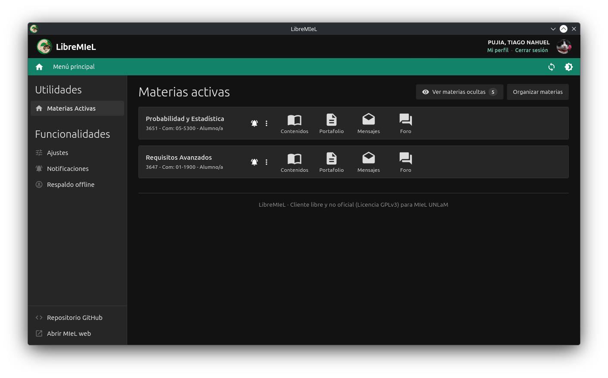

Notificaciones y widgets
Enterate al instante de nuevos archivos, entregas, mensajes, foros o evaluaciones. Accedé a cada materia directamente desde notificaciones o desde el widget para Android sin pasar por el navegador.
LibreMIeL es una alternativa gratuita, libre y de código abierto creada por y para estudiantes. Recibí notificaciones al instante, consultá tus materias incluso si MIeL está caído, enviá entregas, respaldá foros completos y olvidate de iniciar sesión cada vez.
Disponible para Windows, Linux, Android y macOS (x64 y ARM64).

Diseñado respetando la estética original de MIeL en modo claro y oscuro, y cuidando que la sincronización en segundo plano jamás marque tus mensajes o archivos como leídos sin tu permiso.
Enterate al instante de nuevos archivos, entregas, mensajes, foros o evaluaciones. Accedé a cada materia directamente desde notificaciones o desde el widget para Android sin pasar por el navegador.
Revisa novedades en segundo plano sin borrar tus carteles rojos en la web oficial de MIeL. Además, en los foros podés elegir recibir alertas solo cuando te etiquetan o responden.
¿Se cayó MIeL o te quedaste sin internet? Seguí consultando tus materias, contenidos, mensajes, foros y entregas visitadas, con un aviso claro del estado del servidor.
Un modelo pensado para sentirse lo más nativo y fiel posible a MIeL en modo claro y oscuro. Leé y respondé mensajes, subí entregas de Portafolio, revisá asistencias y participá en foros desde la app.
Descargá foros enteros y todo el material de tus materias ordenado por carpetas con un solo clic, ideal para conservar tus apuntes antes de que cierre el cuatrimestre.
Iniciá sesión una sola vez y olvidate de volver a poner tu clave cada día. Tus datos quedan resguardados en tu equipo y la cuenta solo se cierra cuando vos lo decidís.
Mantené LibreMIeL al día sin entrar a la web. Cuando sale una nueva versión, la aplicación te avisa y se actualiza directamente con un clic.
Buscador global sin conexión para encontrar material al instante, asistente de estudio con IA y soporte para iPhone (iOS).
Seleccioná tu sistema operativo y arquitectura. Todos los paquetes se compilan automáticamente mediante GitHub Actions y cuentan con verificación criptográfica SHA-256.
Disponible como instalador asistente con inicio automático opcional, System Tray y actualización silenciosa desatendida.
Configura accesos directos, ícono dinámico en la bandeja del sistema (System Tray con insignia de novedades), inicio automático y actualización silenciosa in-app.
Descomprimí la carpeta en cualquier ubicación o pendrive y ejecutá libremiel.exe sin permisos de administrador.
Instaladores nativos para escritorio y versiones portables con soporte de bandeja del sistema y almacenamiento seguro.
Instalable con sudo apt install ./LibreMIeL-*.deb. Configura el lanzador de escritorio y dependencias automáticamente.
Instalable con sudo dnf install ./LibreMIeL-*.rpm en Fedora y distribuciones basadas en Red Hat.
Instalable directamente con sudo pacman -U LibreMIeL-*.pkg.tar.zst en Arch Linux, EndeavourOS o Manjaro.
Funciona en cualquier distribución sin instalar dependencias: dale permiso de ejecución (chmod +x) y abrilo.
Archivo comprimido con el binario y librerías listas para extraer y ejecutar desde cualquier carpeta de usuario.
Incluye sincronización periódica en segundo plano (WorkManager), navegación directa a módulos al pulsar notificaciones y actualización in-app de APKs.
Para asegurar que las notificaciones lleguen puntualmente con la pantalla apagada o la app cerrada, configurá en tu dispositivo: Ajustes > Aplicaciones > LibreMIeL > Batería > Seleccionar "Sin restricciones".
arm64-v8a)Ideal para la gran mayoría de los celulares y tablets Android actuales (64 bits). Incluye actualizador in-app en 1 toque vía FileProvider.
Si no estás seguro de la arquitectura de tu teléfono, este instalador incluye todas las arquitecturas en un solo archivo.
Binario Universal nativo que corre a máxima velocidad tanto en procesadores Apple Silicon (arm64) como Intel (x86_64), con soporte de actualización asistida y Keychain.
Abrí la imagen .dmg y arrastrá LibreMIeL.app a tu carpeta de Aplicaciones.
Paquete LibreMIeL.app comprimido listo para extraer y ejecutar directamente en macOS.
Un único código fuente en Flutter compilado de forma nativa para escritorio y dispositivos móviles.
| Sistema Operativo | Arquitecturas | Formatos disponibles | Almacenamiento seguro | Actualización in-app |
|---|---|---|---|---|
| Windows (10 / 11) | x86_64 (64 bits) y ARM64 |
Instalador (.exe) y portable (.zip) |
Windows Credential Manager | Automática desatendida |
| Linux (Debian/Ubuntu, Fedora, Arch) | x86_64 (amd64) y ARM64 (aarch64) |
Instaladores (.deb, .rpm, .pkg.tar.zst) y portables (AppImage, .tar.gz) |
libsecret (GNOME Keyring / KWallet) |
Gestores del sistema y actualización directa |
| Android | Universal, ARM64 (arm64-v8a), ARMv7 (armeabi-v7a) y x86_64 |
Instalador .apk |
Android Keystore / EncryptedSharedPreferences | En 1 toque desde la app |
| macOS | Universal (Intel x86_64 + Apple Silicon ARM64) |
Instalador (.dmg) y portable (.zip) |
macOS Keychain | Asistida en 1 clic (.dmg / .zip) |